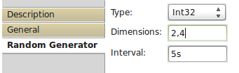

Random Generator
Random Generator is generates random value of chosen data type periodically or randomly depending on configuration.
Output Ports:
- Out optional = false, data type = Text|Decimal|Int32|Int64|Float32|Float64|Bool|Complex32|Complex64|<extensions contributed>
Output port where the random value is showing up.
Properties:

- Type: Bool|Text|Decimal|Int32|Int64|Float32|Float64|Complex32|Complex64|<extensions dependent>
Data type of random value. Extensions can contribute also. - Dimensions: <depends on data type>
Dimensions of random value. - Interval: <depends on data type>
Interval time between data generation. Use combination of literals to express time:- ms - milliseconds
- s - seconds
- m - minutes
- h - hours
- d - days
- inf - only one generation at the beginning
To express random value use '%' sign. For example with '%n[4,1] s' Random Generator will generate a value stochastically accordingly to normal distribution.